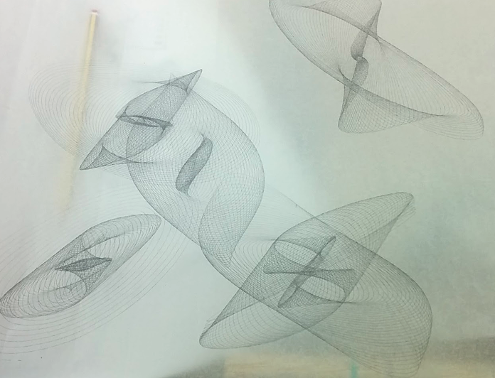
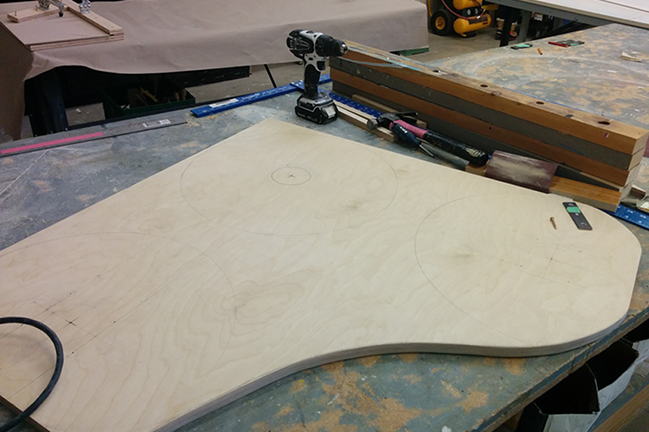
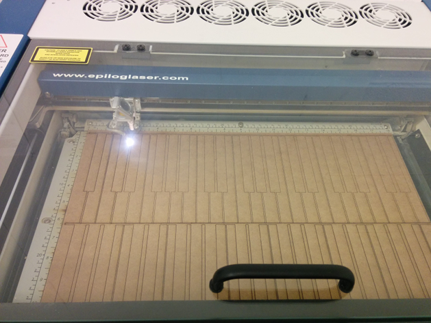
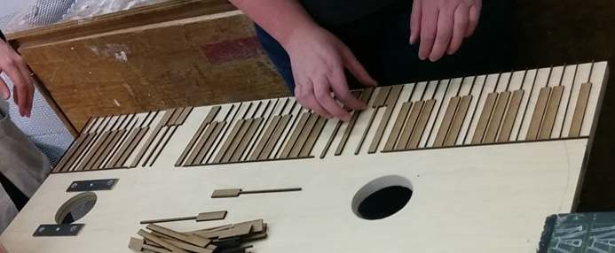
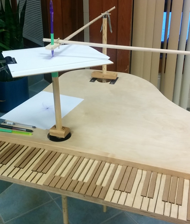
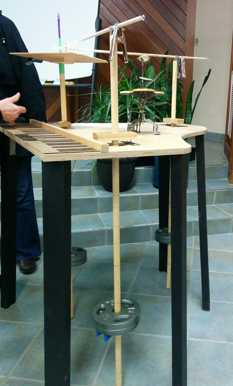
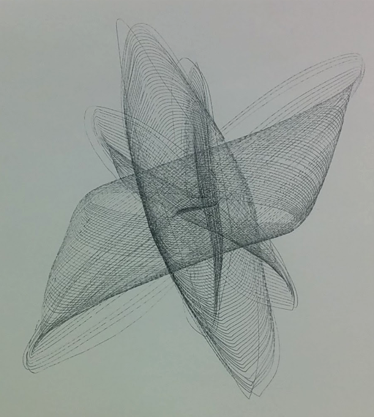

Harmonographs are pendulum-powered, Victorian-era drawing devices that produce images of Lissajous curves.
I was recently invited to design and construct a harmonograph alongside the celebrated British artist Anita Chowdry for a Bridges lecture she was giving with mathematician and physicist John Baez. Harmonographs are mechanical drawing devices that leverage pendulums to render geometric images (usually Lissajous curves).
Drawings produced by our harmonographs.

Construction
The first few days were dedicated to sketching out the visual design of the harmonographs and calculating measurements. Then a week was spent wood-working, laser cutting, sanding, and painting, before ultimately letting hundreds of people play with the harmonographs after the Bridges lecture.
Cutting out the top of the harmonograph designed to look like a grand piano.

Laser cutting the decorative piano keys!

Attaching the decorative piano keys.

Putting everything together and our first run.

View of the pendulums.

Another drawing produced our harmonographs.

The University of Waterloo’s Fine Arts Department put together a video of the two harmonographs we built being constructed: